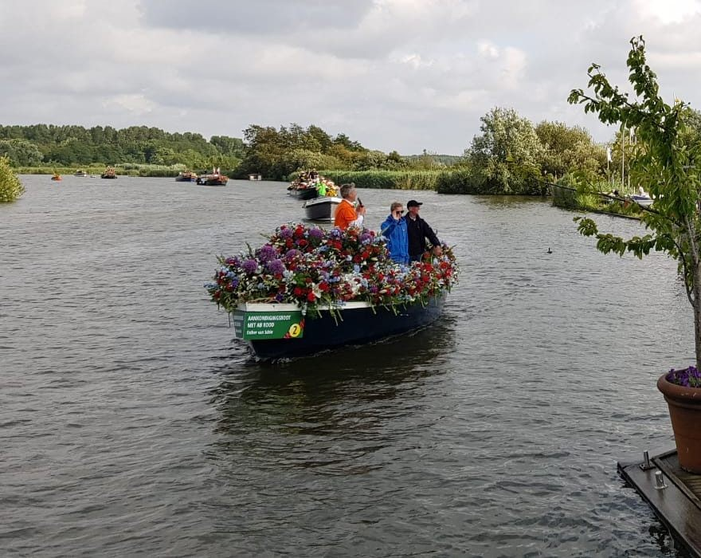
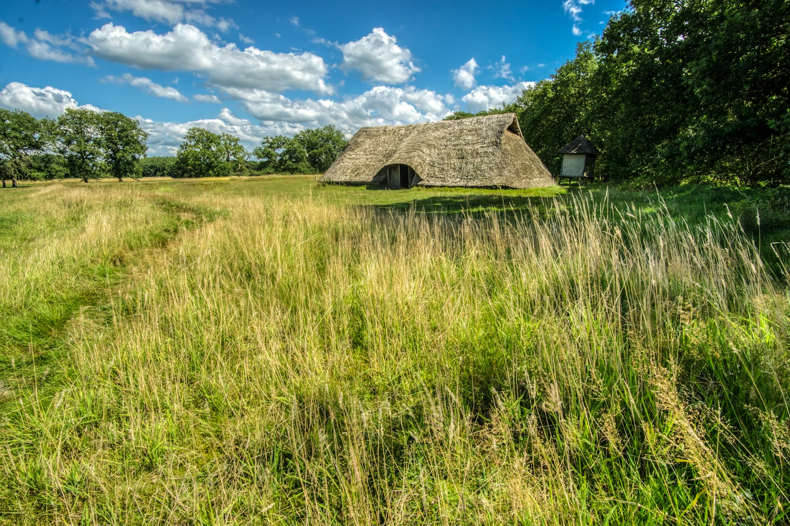

Borrelarrangement
€ 23,50 p.p.kind 5–12: € 13,00
Drankarrangement van 2 uur met 4 rondjes hapjes per persoon. Vanaf 10 personen.
Foppenpoldereiland, Midden-Delfland
Voor een drankje, hapje en lunch aan het water. Ideaal voor fietsers, wandelaars en wie met de boot komt.

Openingstijden
Winter: zaterdag & zondag 10.00 – 17.00
Gesloten van 19 december t/m 1 januari
't Jachthuis ligt op een eiland in een natuur- en recreatiegebied in de gemeente Midden-Delfland, tussen Vlaardingen, Maassluis, Maasland en Schipluiden. Op ons terras aan het water luncht en borrelt u met een uniek uitzicht op de Vlietlanden.
Natuurliefhebber of vogelspotter? Neem een verrekijker mee voor het spotten van vogels, wild en natuur: ons terras is er perfect voor. Ook zonder verrekijker geniet u hier van het mooie gebied, met een broodje, koffie met gebak of huisgemaakte stoof aan het water.
| Zaterdag & zondag | 10.00 – 17.00 |
|---|---|
| Maandag t/m vrijdag | gesloten |
Gesloten van 19 december t/m 1 januari. Met mooi weer soms extra open: zie extra openingstijden.
| Maandag t/m zondag | 10.00 – 17.00 |
|---|---|
| Keuken sluit | 17.00 |
| Terras sluit | 18.00 |
Bij lekker warm weer en voldoende personeel zijn we soms ook 's avonds open: dat vindt u bij de extra openingstijden.
| April 2027 | za & zo 11.00 – ca. 17.30 |
|---|---|
| Mei t/m september 2027 | dagelijks 11.00 – ca. 17.30 |
Overtocht € 1,00, alleen contant (geen pin).
Voor gezelschappen is openstelling op aanvraag mogelijk. Voor besproken feesten en partijen gelden aangepaste open- en sluitingstijden.

Groene salade, (zoete aardappel) frites en een mandje met brood. Vraag naar de prijs.


Dat kan, maar let wel: wij zijn geen snackbar en onze terrasgasten gaan voor. Tijdens pieken is afhalen mogelijk als de keuken er tijd voor heeft, en soms is afhalen tijdelijk gesloten.
Ook koffie, thee, appelsap, ijsjes, blikjes cola en fanta en blikjes bier kunt u meenemen.

Een unieke plek voor feesten en partijen. Lekker borrelen, genieten van een BBQ of een heerlijk buffet, aan het water.
Voor verjaardagen, personeelsfeesten, jubilea, bedrijfsuitjes en -borrels, afscheidsborrels, recepties, bruiloften en evenementen. Of combineer een rondvaart met een arrangement.
€ 23,50 p.p.kind 5–12: € 13,00
Drankarrangement van 2 uur met 4 rondjes hapjes per persoon. Vanaf 10 personen.
€ 37,50 p.p.kind 5–12: € 20,00
Kipsaté in veel pindasaus, vers gebakken brood met smeersels, kroepoek, patat, nasi, groene salade en huzarensalade.
€ 28,50 p.p.kind 5–12: € 15,00
Rundvleeskroketten, vers gebakken brood met smeersels, diverse zachte broodjes, 2 soorten vleesbeleg, 2 soorten kaas (zoet beleg op aanvraag) en 2 rijk gevulde salades.
Uitbreiden: soep € 3,00; gerookte zalm € 3,00; malse kipsaté € 3,50; runderstoofvlees € 3,50
€ 41,50 p.p.kind 5–12: € 23,00
Vers gebakken brood met smeersels, malse kipsaté met pindasaus, runderstoofvlees (langzaam gestoofd in Leffe Bruin), Thaise kipkerrie, Char Siu (geroosterd varkensvlees met teriyakisaus), patat, jasmijnrijst en 2 salades.
Uitbreiden: Thaise kerrie met garnalen i.p.v. kip € 2,80 p.p.; zalm van de plaat met teriyakisaus € 3,50 p.p.
€ 41,50 p.p.kind 5–12: € 23,00
Vers gebakken brood met smeersels, malse kipsaté, braadworst, gemarineerde varkenslapjes, hamburgers, patat, 2 salades en verschillende sauzen.
Uitbreiden: zalmfilet € 3,90; garnalenspiezen € 3,90
Koffie & thee, sappen & jus d'orange, frisdranken, melk & karnemelk, huiswijn (droog, rosé, wit, zoet), pils van de tap (Jupiler, Hertog Jan), 0% Radler en Warsteiner, binnenlands gedistilleerd.
Speciaalbier van fles of tap (Leffe Blond & Vedett Extra White): supplement € 2 op nacalculatie. Overige drankjes per consumptie; buitenlands gedistilleerd valt erbuiten.
Verlenging per uur (hele groep): € 8 p.p., kind 5–12 € 3.
Vul het formulier in, dan nemen wij contact met u op. Uw datum ligt vast na een aanbetaling van 20%.
Voor besproken feesten regelen wij de overvaart, ook buiten de tijden van de veerpont (onder voorbehoud).
't Jachthuis ligt op een eiland en is niet direct met de auto bereikbaar. (Auto's bij het Jachthuis hebben een speciale ontheffing van de gemeente Midden-Delfland.) Kies hoe u komt:
Met veerpont de Kwakel vaart u vanaf de Kwakelweg over de Middenwetering; de aanlegsteiger ligt naast 't Jachthuis.
Het hele jaar bereikbaar op de fiets.
Met de auto komen en het laatste stuk wandelen of fietsen.
Zomer en winter welkom met de boot, via het vaarknooppuntensysteem (sinds 2015).
Uitstappen bij busstation Maasland of halte Maasland Viaduct, dan ca. 30 minuten wandelen.
Let op: wij zijn niet van de naastgelegen jachthaven. Vragen over de jachthaven? Neem contact op via www.dwsv.nl.

“De groene achtertuin van de metropool.”
't Jachthuis ligt aan het einde van het Foppenpad, aan de Middenwetering, de Foppenplas en het Bommeer. Wij noemen het met voorsprong het meest idyllische terras van de hele regio.
Wij zijn partner van PUUUR Midden-Delfland.
Ben jij 16 jaar of ouder en woon je in de omgeving van Maasland of Maassluis? Wij zoeken voor de zomer extra hulp.
Oproepkrachten voor de bediening, keuken, afwas en bar. Ervaring is niet nodig. Van april t/m september, soms ook weekenden daarna. Werktijden vaak tussen 9.00 en 20.00. We zijn niet met de auto bereikbaar, dus een fiets is nodig. Minimumleeftijd 16, geen maximum.
010-5903411info@hetjachthuis.nl
Reserveren kan voor groepen vanaf 6 personen. Kleiner gezelschap? Loop gerust binnen.